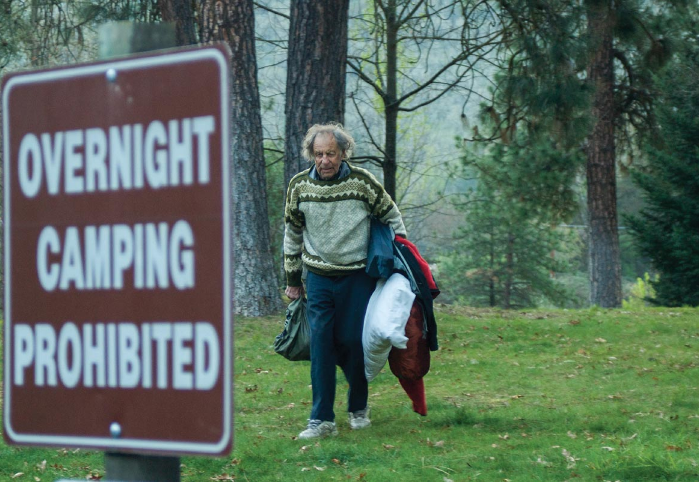

Friedrich Wolfgang Beckey (14 January 1923 – 30 October 2017), known as Fred Beckey, was an American rock climber, mountaineer and book author, who in seven decades of climbing achieved hundreds of first ascents of the tallest peaks and best routes in remote corners of Alaska, the Canadian Rockies and the Pacific Northwest. Among the Fifty Classic Climbs of North America, seven were established by Beckey, often climbing with some of the best known climbers of each generation.
Beckey was born in 1923 near Düsseldorf, Germany to Klaus Beckey, a surgeon, and Marta Maria Beckey who was an opera singer. In 1925 economic hardships due to hyperinflation in the Weimar Republic forced his family to emigrate to the United States, settling up in Seattle, Washington. His brother, Helmut "Helmy" Beckey, was born in Seattle in 1926 and would later become Fred's frequent climbing partner. At age twelve, Fred Beckey climbed Boulder Peak in the Cascades by himself, after wandering off on a family camping trip. Afterwards, his family signed him up with the Boy Scouts where he learned the basic concepts of climbing. Later he joined The Mountaineers club. In 1939, at sixteen, Fred and two friends climbed 7,292-foot Mount Despair in the North Cascades, which was considered unclimbable at the time. In 1942, the teenage Beckey brothers snatched a second ascent of Mount Waddington, which was then considered the most difficult climb in North America. Beckey follow that by many more first ascents of summits in the Olympic and North Cascade ranges. In 1942 he joined 10th Mountain Division, based in Colorado, and served as an instructor.
After the war, Beckey studied business administration at the University of Washington, while still spending a lot of time climbing mountain ranges in the Northwest and desert rock formations in the Southwest. After graduation in 1949 he worked for the Seattle Post-Intelligencer and became a print shop sales representative.[2] However, he soon discovered that his work interfered with his climbing. For a time, he worked as a delivery truck driver, which left him time for climbing. As time went on, he decided that climbing was his life's focus. He never married or had children, he never pursued a professional career, he never sought money or financial security as a goal—his goal was to climb mountains.[2]
In 1955 Beckey joined the International Himalayan Expedition to climb the world’s fourth-highest peak, Lhotse. During the expedition his tentmate developed cerebral edema at 23,000 feet on the night before they were to attempt the summit. Beckey descended in the blizzard to get help, but was later blamed by his teammates for abandoning his partner, who was rescued by others.[9][2] Consequently although Beckey seemed a likely choice as a member for first American Everest Expedition in 1963, he was never invited by his ex-teammates. Afterwards Beckey shied away from the large team efforts abroad, preferring smaller alpine-style undertakings alone or with a few companions seeking out Americas last unclimbed peaks or striking routes considered too difficult to climb. He often climbed 40 or 50 different summits a year, and over the decades managed to achieve nearly one thousand first ascents.[2]
In the late 1940s, he asked The Mountaineers of Seattle to publish his first climbing guidebook for the local peaks. They turned him down, and the American Alpine Club agreed to print a few thousand copies for a flat fee. Between climbs, he wrote several books, most notably the Cascade Alpine Guide, the definitive three-volume description of the Cascades from the Columbia River to the Fraser River, now in its third edition, published by The Mountaineers.
In 2003, his 563-page book on the history of the region, Range of Glaciers, was published by the Oregon Historical Society Press. According to a reviewer, he did much of the research for the volume in Washington, D.C., at the Library of Congress and the National Archives, scouring files of the State Department, U.S. Geological Survey and other agencies. Beckey also perused the Canadian archives in Ottawa, Ontario; Hudson's Bay Co. archives in Winnipeg, Manitoba; British Columbia archives in Victoria, British Columbia; records of the Northwest Boundary Survey at Yale University; and records of the Northern Pacific and Great Northern railroads in Minneapolis.
Timothy Egan captures Fred Beckey's personality in a chapter of The Good Rain. Beckey named Vasiliki Ridge, by Washington Pass, after his one true love. Beckey was a quintessential dirtbag climber, well captured by a classic portrait of him by Corey Rich[4] from 2004 Patagonia's Fall catalog, where he is trying to hitchhike while holding a sign "Will belay for food".[14] His reputation is well known among many climbers, captured in a T-shirt "Beware of Beckey: He will steal your woman, steal your route."
 Caption